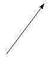

| Choisissez votre langue ! | Choose your language ! |
Donner le tableau de variation de la fonction x → 1/(1+x2) définie sur ℝ entier.
aide
Commencer par déterminer l'intervalle d'étude.
solution
La fonction étant paire il suffit d'étudier sa variation sur ℝ+.
Sur cet ensemble x2 est croissante donc 1+x2 aussi et la fonction est décroissante.
Il y a donc un maximum absolu à l'origine.
Par ailleurs limx→+∞f(x)=limx→-∞f(x)=0+
D'où le tableau.
| | | x | | | -∞ | 0 | +∞ | | | ||
| f(x) | 0+ |  | 1 |  |
0+ | |||
Give the table of variations of the function x → 1/(1+x2) set to ℝ integer.
hint
Start by determining the study interval.
solution
The function being even it suffices to study its variation on ℝ+.
On this set x2 is increasing hence the same for 1+x2 and the function is decreasing.
So there is an absolute maximum at the origin.
Furthermore limx→+∞f(x)=limx→-∞f(x)=0+
Whence the table :
| | | x | | | -∞ | 0 | +∞ | | | ||
| f(x) | 0+ | 1 | |
0+ | ||||
|
Création Gilles Dubois
Created by Gilles Dubois
|
Janvier 2022
January 2022
|
Version mobile Jquery
Mobile Jquery version
|
|